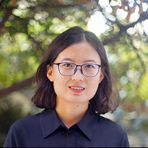
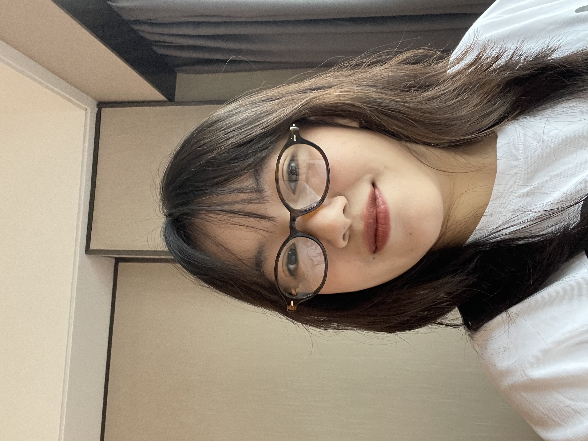
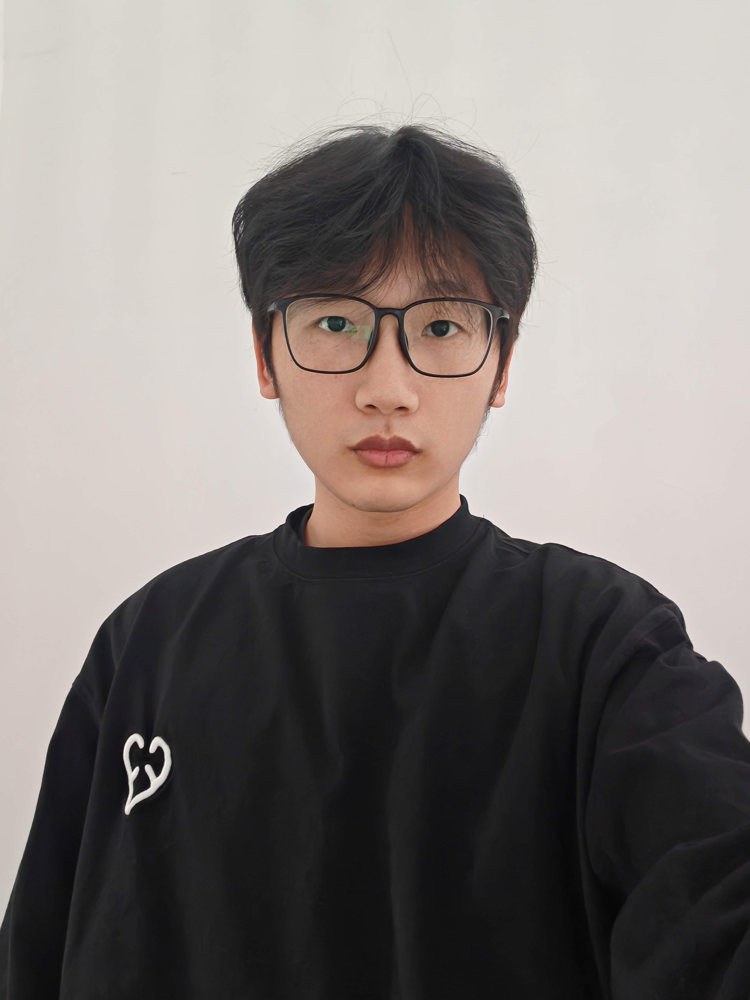
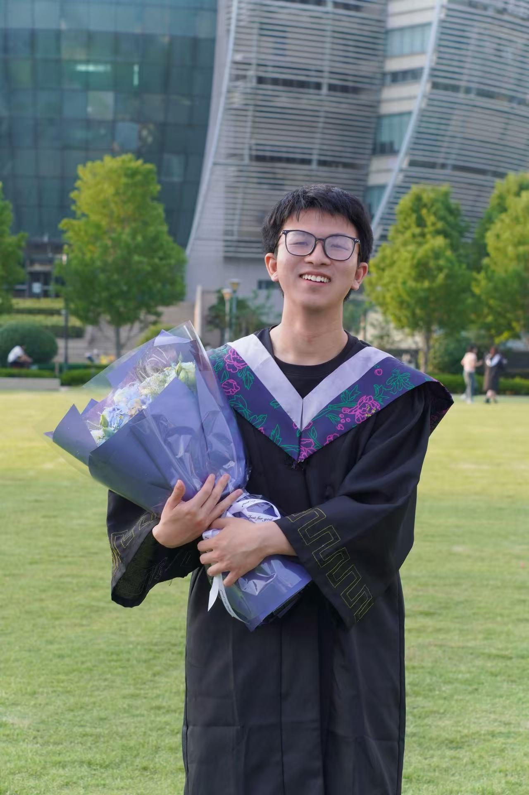
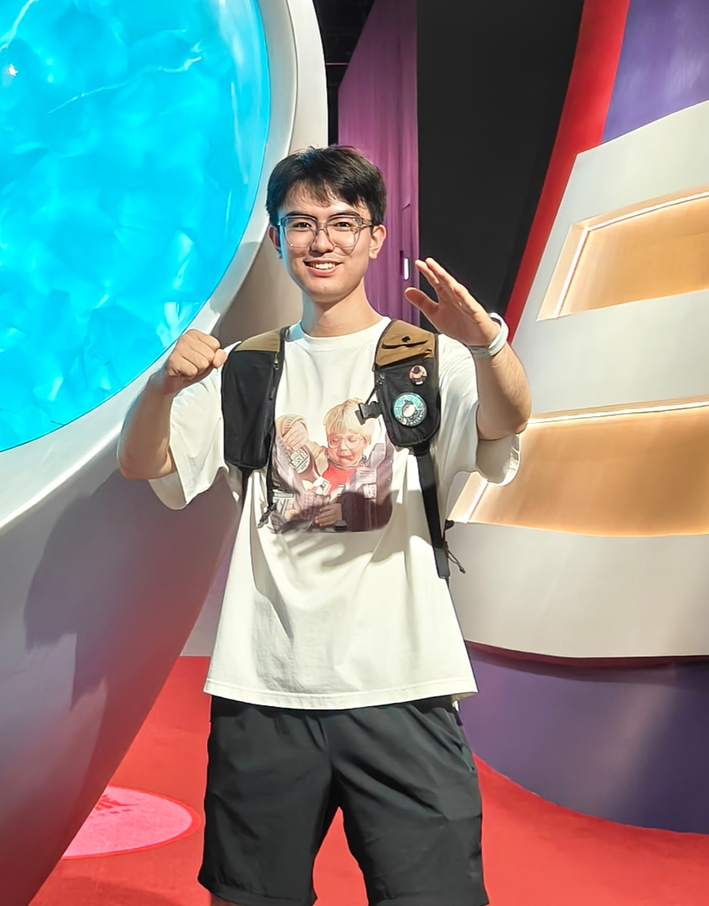
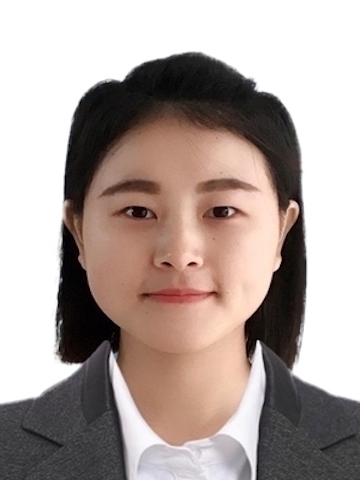

Experiment
Epigenetic Regulation in Development Laboratory
Gastrulation is a pivotal window in mouse development: epiblast cells undergo coordinated morphogenesis and fate decisions to establish the three germ layers. We build quantitative, time-resolved views of these transitions and test how gene regulation and chromatin mechanisms shape lineage commitment.

Computational methods
import anndata as ad
import metacells as mc
import scipy.sparse as sp
import matplotlib.pyplot as plt
from math import hypot
mc.pl.exclude_genes(raw,
excluded_gene_names==gene_list,
excluded_gene_patterns=gene_patterns,
random_seed=123456)
metacells = mc.pl.collect_metacells(raw,
name='metacells',
random_seed=123456)
Research
Cellular differentiation transforms a single-cell zygote into a complex multi-cellular organism composed of various tissue and cell types. It's fascinating to understand how this is achieved despite genetic homogeneity.
The overarching goal of the lab is to unravel the principle of epigenetic regulation in cell fate decisions. We employ embryogenesis, gametogenesis, in vitro models and synthesize experimental and computational frameworks to precisely resolve phenotypes and gene functions, effectively disentangling cell-intrinsic and non-cell-autonomous effects over time.


Principal Investigator

Saifeng Cheng
Assistant Professor
Principal Investigator, Westlake University
Postdoctoral Fellow, Weizmann Institute of Science
Ph.D degree, Huazhong Agricultural University
Current Members

Jinfang Wang
Postdoctoral Fellow (2024-)
PhD degree, Xiamen University
Bachelor degree, Soochow University
Ying Zhu
PhD student (2024-)
Bachelor degree, Shenzhen University

Shuailin Du
PhD student (2024-)
Master degree, Xiamen University
Bachelor degree, Zhejiang Chinese Medical University

Jingyi He
PhD student (2025-)
Bachelor degree, Zhejiang Normal University

Jing Qian
PhD student (2025-)
Bachelor degree, Soochow University

Shuo Wang
PhD student (2025-)
Bachelor degree, Soochow University
Qi Geng
Visiting student (2025-)

Jieran Don
Research Assistant (2025-)
Master degree, Sichuan Agricultural University
Bachelor degree, Sichuan University of Traditional Chinese Medicine

Weiyuan Ma
Research Assistant (2025-)
Bachelor degree, South China Agricultural University
Alumni
Publication
- [1] Akhiad Bercovich, Aviezer Lifshitz, Michal Eldar, Saifeng Cheng, Roni Stok Ranen, Yonatan Stelzer, Amos Tanay#. (2025). IceQream: Quantitative chromosome accessibility analysis using physical TF models. Nature Communication 16, 8984. 10.1038/s41467-025-63925-x.
- [2] Ron Hadas*, Hernan Rubinstein*, Markus Mittnenzweig*, Yoav Mayshar, Raz Ben-Yair, Saifeng Cheng, Alejandro Aguilera-Castrejon, Netta Reines, Ayelet-Hashahar Orenbuch, Aviezer Lifshitz, Dong-Yuan Chen, Michael B Elowitz, Magdalena Zernicka-Goetz, Jacob H Hanna, Amos Tanay#, Yonatan Stelzer#. (2024). Temporal BMP4 effects on mouse embryonic and extraembryonic development. Nature 634, 652-661. 10.1038/s41586-024-07937-5
- [3] Yoav Mayshar*, Ofir Raz*, Saifeng Cheng, Raz Ben-Yair, Ron Hadas, Netta Reines, Markus Mittnenzweig, Oren Ben-Kiki, Aviezer Lifshitz, Amos Tanay#, Yonatan Stelzer#. (2023). Time-aligned hourglass gastrulation models in rabbit and mouse. Cell 186, 2610-2627.e18. 10.1016/j.cell.2023.04.037.
- [4] Marko Dunjić*, Felix Jonas*, Gilad Yaakov*, Roye More, Yoav Mayshar, Yoach Rais, Ayelet-Hashahar Orenbuch, Saifeng Cheng, Naama Barkai, Yonatan Stelzer. (2023). Histone exchange sensors reveal variant specific dynamics in mouse embryonic stem cells. Nat Commun 14, 1-19. 10.1038/s41467-023-39477-3.
- [5] Saifeng Cheng, Yoav Mayshar, Yonatan Stelzer. (2023). Induced epigenetic changes memorized across generations in mice. Cell 186, 683-685. 10.1016/j.cell.2023.01.023.
- [6] Saifeng Cheng*, Markus Mittnenzweig*, Yoav Mayshar, Aviezer Lifshitz, Marko Dunjić, Yoach Rais, Raz Ben-Yair, Stephanie Gehrs, Elad Chomsky, Zohar Mukamel, Hernan Rubinstein, Katharina Schlereth, Netta Reines, Ayelet-Hashahar Orenbuch, Amos Tanay#, Yonatan Stelzer#. (2022). The intrinsic and extrinsic effects of TET proteins during gastrulation. Cell 185, 3169-3185.e20.
- [7] Markus Mittnenzweig*, Yoav Mayshar*, Saifeng Cheng, Raz Ben-Yair, Ron Hadas, Yoach Rais, Elad Chomsky, Netta Reines, Anna Uzonyi, Lior Lumerman, Aviezer Lifshitz, Zohar Mukamel, Ayelet-Hashahar Orenbuch, Amos Tanay#, Yonatan Stelzer#. (2021). A single-embryo, single-cell time-resolved model for mouse gastrulation. Cell 184, 2825-2842.e22. 10.1016/j.cell.2021.04.004.
- [8] Alejandro Aguilera-Castrejon*, Bernardo Oldak*, Tom Shani, Nadir Ghanem, Chen Itzkovich, Sharon Slomovich, Shadi Tarazi, Jonathan Bayerl, Valeriya Chugaeva, Muneef Ayyash, Shahd Ashouokhi, Daoud Sheban, Nir Livnat, Lior Lasman, Sergey Viukov, Mirie Zerbib, Yoseph Addadi, Yoach Rais, Saifeng Cheng, Yonatan Stelzer, Hadas Keren-Shaul, Raanan Shlomo, Rada Massarwa, Noa Novershtern, Itay Maza#, Jacob H Hanna#. (2021). Ex utero mouse embryogenesis from pre-gastrulation to late organogenesis. Nature 593, 119-124. 10.1038/s41586-021-03416-3.
- [9] Saifeng Cheng, Feng Tan, Yue Lu, Xiaoyun Liu, Tiantian Li, Wenjia Yuan, Yu Zhao, Dao-Xiu Zhou. (2018). WOX11 recruits a histone H3K27me3 demethylase to promote gene expression during shoot development in rice. Nucleic Acids Res 46, 2356-2369. 10.1093/nar/gky017.
Positions
Post-doctoral position
We are looking for motivated postdoctoral fellows with strong background in developmental biology, epigenetics, single-cell genomics, computational biology or related fields. Candidates with experience in mouse embryology and gene editing are highly preferred. Please send your CV, research interests and contact information of three references to me.
Graduate students
If you are insterested in epigenetics and embryo development, please have a try in our lab!
Contact us
If you are interested in join us, please email me!
Email : chengsaifeng[at]westlake.edu.cn
Address : 3-228/229, Yunqi campus, Westlake University, Hang Zhou, China